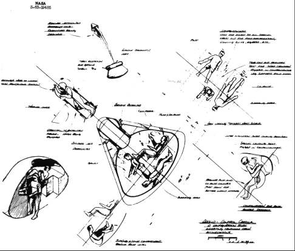
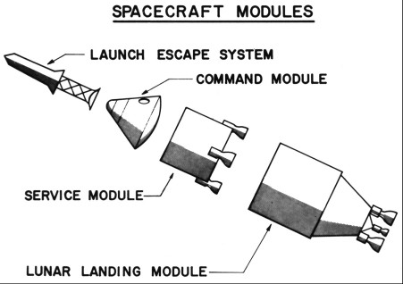

This sudden preoccupation in NASA's highest echelons with the mode of flying to the moon put the spacecraft development planners in a quandary. Space Task Group engineers had the contractors' feasibility study reports in hand and had used them and their own studies in drafting specifications for a spacecraft hardware contract. The major question was whether they would have to wait until all the pieces in the Apollo stack were defined before awarding the contract. Robert Gilruth went to Washington on 2 June to find out.
During a meeting with Abe Silverstein and his Space Flight Programs staff, a consensus developed on the six areas in which major contracts would be needed: (1) launch vehicles; (2) the spacecraft command center, which would double as the return vehicle; (3) the propulsion module, with extra duty as the lunar takeoff section; (4) the lunar landing stage, which would be both a braking rocket and a lunar launch pad; (5) the communications and tracking network; and (6) the earth launch facilities.4 To get these projects under way, Silverstein said, Seamans had approved letting the spacecraft development contract.5
Gilruth took this good news back to Virginia, but he and his men still had a question. What would industry be bidding on? The Space Task Group favored a modified Mercury capsule (a bell shape extended into a conical pyramid) and had worked on that design. Its chief competitor was a lifting-body design, with trims and flaps, championed by Alfred Eggers and his colleagues at the Ames Research Center.

Space Task Group engineers sketched crew positions in the command module for an October 1960 configuration study of the "Apollo-Control Capsule." The command module with airlock retracted is at the center, the bathing compartment sketched below it. At left center, a crewman in the extended airlock removes the hatch. At upper and lower right, legs of the third takeoff and reentry seat, rigged in the companionway, are folded away for flight and moved back into place for landing. At upper left, parachutes begin to deploy after rocket jettison for reentry.

Spacecraft modules in this drawing were identified in the Space Task Group's request for proposals from contractors for developing and producing the command module.
Max Faget, leading spacecraft designer at the Space Task Group, later said that one of his major objectives was to make the Apollo command module big enough; they were just finding out all the problems caused by a too-small Mercury capsule. He set the diameter at the base of the Apollo craft at 4.3 meters, as opposed to Mercury's 1.8 meters. When Faget asked Wernher von Braun, at Marshall, to fly some models of the craft, there was a problem. Since early Saturn vehicles did not have a payload, Marshall had used spare Jupiter missile nose cones on the first test flights. Douglas Aircraft Company had resized the Saturn's S-IV stage to fit the Jupiter body, which was smaller than the Apollo command module. Marshall contended that enlarging the S-IV would cost millions of dollars, and Space Task Group did not argue the point. Until this time, the design concept for the Apollo heatshield had called for a sharp rim, as in Mercury, which increased the total drag and gave more lifting capability. Rather than decrease the interior volume, Faget's design team simply rounded the edge to match the S-IV.
The command module's rounded edges simplified another design decision. Faget wanted to use beryllium shingles on the afterbody, as he had in Mercury, to take care of reentry heating, but Langley engineers believed the spaceship would be traveling too fast for shingles to handle the heat. The design group decided to wrap an ablative heatshield around the whole command module. This wraparound shield had another advantage. One of the big questions about outer space was radiation exposure. James Van Allen, discoverer of the radiation belts surrounding the earth and named for him, had predicted exposure would be severe. Encapsulating the space vehicle with ablative material as an additional guard against radiation, even though it entailed a large weight penalty, was a big selling point for the heatshield.6
Space Task Group engineers were satisfied with their design, although none too sure that anyone else in NASA liked it. George Low, however, found merit in both the blunt- and lifting-body configurations and suggested to Silverstein that two prime spacecraft contractors be hired, each to work from a different set of specifications.7
Space Task Group engineers wanted no part of this dual approach. In early July, Caldwell Johnson summarized for Gilruth their reasons for insisting on the blunt-body shape. Johnson emphasized mainly the operational advantages and the experience gained from Mercury that would accrue to Apollo. He confined his discussion to the trip to the moon and back, making no mention of landing the craft on its surface.8 Those most concerned with the command module's basic configuration were still looking at the problems connected with circumlunar flight: a vehicle that could fly around the moon and back to earth, sustain three men for two weeks, and reenter the atmosphere at much higher speeds than from earth orbit.
Gilruth's Apollo planners pressed on, drawing up a hardware development contract for their chosen craft. This vehicle could be adapted for a lunar landing later, but that problem was shunted to the background for the time being. Jack Heberlig, a member of Faget's design team for the Mercury capsule, drafted the hardware guidelines for the Apollo command center spacecraft. While Heberlig's procurement plan was in final review at NASA Headquarters the first week in July, Robert Piland and John Disher were setting up a technical conference to apprise potential contractors of NASA's requirements. Invitations were sent to 1,200 representatives from industry and 160 from government agencies.9
From 18 to 20 July 1961, more than 1,000 persons (representing 300 companies, the White House staff, Congress, and other governmental departments) attended a NASA-Industry Apollo Technical Conference in Washington. The first day, NASA engineers talked about space vehicle design, mission profiles, and navigation, guidance, and control. On the second day, the attendees heard papers on space environment, entry heating and thermal protection, and onboard systems. During these sessions, the Space Task Group speakers pushed their blunt-body shape.10
Gilruth's men never doubted that the keystone to Apollo was the spacecraft itself. As they waited for higher authority to act, they continued to plan with Marshall a series of tests using a blunt-body capsule.11 By the end of July, Administrator Webb had approved the procurement plan, and Glenn Bailey, Gilruth's contracting officer, had mailed out the requests for proposals.12
While waiting for the companies to respond, NASA awarded its first hardware contract for Apollo. After spending six months on a feasibility study, the Instrumentation Laboratory of the Massachusetts Institute of Technology (MIT) received a contract on 9 August to develop the guidance and navigation system.13
4. Low to Dir., Space Flight Prog., "Report of Meeting with Space Task Group on June 2, 1961," 6 June 1961.
5. Seamans memo for file, "Apollo procurement," 2 June 1961; Low memo, 6 June 1961.
6. Willard M. Taub, interview, Houston, 10 April 1967; Maxime A. Faget, interview, Houston, 15 Dec. 1969.
7. Low to Dir., Space Flight Prog., "Apollo Configuration," 12 June 1961. See Ivan D. Ertel and Mary Louise Morse, The Apollo Spacecraft: A Chronology, vol. 1, Through November 7, 1962, NASA SP-4009 (Washington, 1969), for illustrations of shapes proposed for the Apollo reentry vehicle.
8. Caldwell C. Johnson to Dir., STG, "A case for the selection of the semi-integrated, blunt body configuration for Apollo spacecraft," 5 July 1961, with encs. (final version of draft dated 20 June 1961 - see n. 11).
9. Robert O. Piland to Jack C. Heberlig, "Space Task Group Review of 'General Requirements for a Proposal, Project Apollo, Phase A' dated May 5, 1961 (First Draft)," 8 May 1961, with encs.; Robert R. Gilruth to NASA Hq., Attn.: Ernest Brackett, "Transmittal of Project Apollo Procurement Plan for Approval," 26 June 1961, with encs.; Abe Silverstein to Herbert L. Brewer, "Comments on Project Apollo Procurement Plan," 3 July 1961; Piland to Charles J. Donlan, "Apollo Technical Conference," 8 June 1961; John H. Disher to STG, Attn.: Paul E. Purser, "NASA-Industry Apollo Technical Conference," 13 June 1961; Disher, "Progress Status Sheet," in Administrator's Progress Report, NASA, July 1961, p. 25.4.
10. "Space Unit Details Plans for Apollo," Newport News (Va.) Times-Herald, 19 July 1961; Disher, "Progress Status Sheet"; NASA, "NASA-Industry Apollo Technical Conference, July 18, 19, 20, 1961: A Compilation of the Papers Presented," 2 parts, n.d.
11. Gilruth to NASA Hq., Attn.: Low, "Preliminary project development plan for 'boilerplate' spacecrafts for the Saturn C-1 test flights SA-7, -8, -9, and -10," 16 June 1961, with enc., Leo T. Chauvin to Dir., STG, subj. as above, and "Preliminary Project Development Plan for SA-7 Through -10 Payloads," 9 June 1961; Johnson to Dir., STG, "A case for the selection of the semi-integrated, blunt body configuration for Apollo spacecraft," 20 June 1961, draft memo with encs.
12. Brackett to STG, Attn.: Gilruth, "Transmittal of Approved Project Apollo Spacecraft Procurement Plan and Class Determination and Findings," 28 July 1961, with encs.; Glenn F. Bailey, "Request for Proposal No. 9-150, Project Apollo Spacecraft," 28 July 1961.
13. House Committee on Science and Astronautics, Aeronautical and Astronautical Events of 1961: Report, 87th Cong., 2nd sess., 7 June 1962, p. 38.